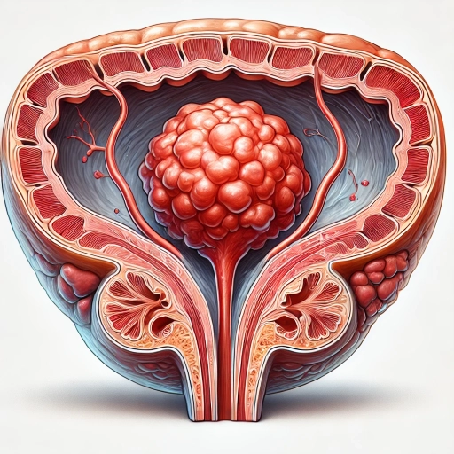

سرطان المثانة: الدليل الشامل للتشخيص والعلاج
نظرة شاملة عن المرض
سرطان المثانة هو أكثر أنواع السرطانات الخبيثة شيوعًا في الجهاز البولي. وسرطان الخلايا الظهارية هو النوع النسيجي السائد في الولايات المتحدة وأوروبا الغربية، حيث يشكل حوالي 90 بالمائة من سرطانات المثانة. وفي مناطق أخرى من العالم، مثل الشرق الأوسط، يمكن رؤية كل من الأنسجة الظهارية وغير الظهارية، ويرجع الأخير جزئيًا إلى انتشار داء البلهارسيا في هذه المناطق.
و في الأردن؛ يتشابه سرطان المثانة كثيراً في نمط انتشاره وشيوعه مع الولايات المتحدة الأميريكية و أوروبا وذلك لعدم انتشار أمراض، مثل البلهارسيا، ذات العلاقة مع أورام المثانة في الأردن
سرطان المثانة هو العاشر بين أكثر أنواع السرطان شيوعًا في العالم. وعلى مستوى العالم، كان هناك ما يقرب من 500,000 حالة جديدة وأكثر من 210,000 حالة وفاة في عام 2020. وهو سادس أكثر أنواع السرطان شيوعًا بين الذكور والتاسع بين أسباب الوفاة بالسرطان. ينشأ هذا الورم في الخلايا الظهارية،(Urothelial cells) التي تبطن الجدار الداخلي للمثانة بنسبة 90% من الحالات، ويسمى سرطان الخلايا الانتقالية (Transitional cell carcinoma). يتم تصنيف الأورام في حال سرطان المثانة حسب المرحلة السريرية للورم؛ الى:
- سرطان المثانة السطحي (غير المُتَوَغِّل): يقتصر على الطبقة الداخلية لبطانة المثانة
- الأورام المُتَوَغِّلة في عضلات المثانة: تغزو الطبقة العضلية للمثانة؛ أي العضلات التي تلي طبقة البطانة الداخلية.
- الأورام النُقَيْلِيَّة: والتي تكون قد انتشرت إلى العقد الليمفاوية أو أعضاء بعيدة
تشير الدراسات إلى أن التدخين مسؤول عن 50-65% من الحالات، حيث تطرح المواد المسرطنة في البول وتلامس أنسجة المثانة مباشرةً لمدة تصل إلى 3 ساعات بعد كل سيجارة. ومن العوامل الخطيرة الأخرى التعرض المزمن للأصباغ الكيماوية (خاصةً في صناعات المطاط والنسيج) والالتهابات البولية المتكررة.
أعراض سرطان المثانة
تختلف الأعراض حسب مرحلة الورم:
- العلامات المبكرة:
- بيلة دموية غير مؤلمة ومتقطعة (ظهور الدم فجأة ثم اختفاؤه) لقراءة المزيد عن الدم في البول (البيلة الدموية).
- حرقة بولية متقطعة. لمعرفة المزيد عن حرقة البول.
- زيادة معدل التبول بشكل كبير يومياً لمعرفة المزيد عن تكرار البول.
- المراحل المتقدمة:
- ألم حوضي مستمر ويظهر خاصة في المنطقة الأربية لمعرفة المزيد عن الألم الحوضي.
- وذمة في الساقين (انتفاخ الرجلين)؛ بسبب انسداد الأوعية الليمفاوية
- فقدان أكثر من 10% من الوزن خلال 6 أشهر
- فشل كلوي نتيجة انسداد الحالبين
ملاحظة سريرية هامة في سرطان المثانة:
قد تتشابه أعراض سرطان المثانة الأولية مع مشاكل أخرى مثل التهاب المثانة البسيط، لكن الاستجابة الجزئية للمضادات الحيوية مع تكرار النزف تشير لضرورة الفحص المتخصص.
الخارطة التشخيصية المتكاملة في سرطان وأورام المثانة
الخطوة الأولى: التقييم غير التوغلي
- تحليل البول الخلوي (Urine cytology) للكشف عن الخلايا السرطانية
- التصوير الطبقي المحوسب مع الصبغة (CT urogram)
- فحوصات الدم
الخطوة الثانية: التنظير المتقدم
- تنظير المثانة المرن تحت التخدير الموضعي المزيد عن تنظير المثانة بالمنظار المرن.
- تنظير المثانة تحت التخدير العام؛ مما يسمح بأن يكون تنظير المثانة علاجياً بالإضافة للتشخيص. المزيد عن تنظير المثانة.
- أخذ خزعات عشوائية من مناطق عديدة من بطانة المثانة. وهذا قد يلزم أحياناً
الخطوة الثالثة: التصنيف النسيجي
- تحديد عمق توغل النمو السرطاني داخل المثانة (T1-T4 حسب نظام TNM)
- تحليل المستقبلات المناعية للتنبؤ بالاستجابة العلاجية
- الفحص الجزيئي للطفرات في جينات
علاج سرطان المثانة: الإستراتيجيات العلاجية حسب المرحلة
المرحلة السطحية (Ta, Tis, T1)
- الاستئصال بالمنظار (TURBT) مع كي القاعدة
- العلاج الموضعي بالدوكسوروبيسين أو الميتوميسين خلال عملية تنظير المثانة وازالة النمو السرطاني
- العلاج الموضعي بالدوكسوروبيسين أو الميتوميسين أو BCG بعد عملية تنظير المثانة وازالة النمو السرطاني وبشكل أسبوعي لفترات يحددها استشاري المسالك البولية.
- مراقبة كل 3-9 أشهر بتنظير المثانة و/أو التصوير
المرحلة المُتَوَغِّلة في عضلات المثانة (T2-T4a)
- الاستئصال الجذري للمثانة مع تحويل مخرج الحالبين أو إنشاء مثانة اصطناعية في حالات مختارة
- العلاج الكيماوي المساعد: بالنسبة للمرضى الذين يعانون من سرطان المثانة المتوغل للعضلات والذين يختارون استئصال المثانة الجذري، فإن العلاج الكيميائي المساعد قبل استئصال المثانة هو معيار العلاج الأفضل حالياً، حيث يرتبط هذا النهج بميزة إطالة الحياة حسب ما أثبتت التجارب السريرية.
- العلاج التلطيفي: مثل العلاج الإشعاعي الملطّف للأعراض في الحالات المتقدمة جداً
المرحلة النقيلية (T4b, M1)
- العلاج الكيميائي
- العلاج المناعي
- العلاج الإشعاعي
دليل الوقاية الشامل
للعامة:
- شرب 2.5 لتر ماء يومياً لتخفيف تركيز المواد المسرطنة
- تجنب حبس البول أكثر من 3 ساعات
- استهلاك الخضار الصليبية (البروكلي، القرنبيط)
للمدخنين:
- فحص البول الدوري كل 6 أشهر
- استخدام بدائل النيكوتين تحت الإشراف الطبي
- ممارسة الرياضة لتحسين تدفق البول
للعاملين في الصناعات الكيماوية:
- ارتداء الكمامات والقفازات الواقية
- الاستحمام فور انتهاء الدوام
- فحوصات سنوية؛ مثل تنظير المثانة المرن تحت التخدير الموضعي
مراجع سرطان المثانة
- Amin HAA, Kobaisi MH, Samir RM. Schistosomiasis and Bladder Cancer in Egypt: Truths and Myths. Open Access Maced J Med Sci 2019; 7:4023.
- Sung H, Ferlay J, Siegel RL, et al. Global Cancer Statistics 2020: GLOBOCAN Estimates of Incidence and Mortality Worldwide for 36 Cancers in 185 Countries. CA Cancer J Clin 2021; 71:209.
- Knowles, M., Hurst, C. Molecular biology of bladder cancer: new insights into pathogenesis and clinical diversity. Nat Rev Cancer 15, 25–41 (2015)
- Bladder Cancer: Invasive VI (PD44)
- Chemotherapy, immunotherapy, or combination first-line treatment for metastatic urothelial carcinoma of the bladder: A large real-world experience. | Journal of Clinical Oncology
- Patterns in the Management of Low-Grade Non–Muscle-Invasive Bladder Cancer—the Human and Economic Costs of Excessive Surveillance